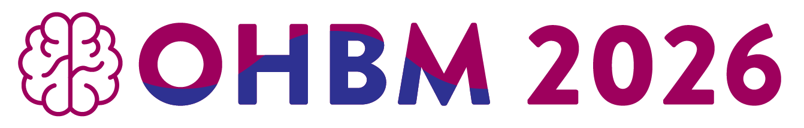

name: title layout: true class: cover title-slide --- count: false counter: false .boxed-content[ .pull-left.center[ ] .pull-right.center[ <br /> <br /> <br /> <br /> <br /> # Compute Once, Reuse Forever ## Sustainable Science with NiPreps *Christopher J. Markiewicz* ] ] ??? --- name: nofooter layout: true --- name: footer layout: true .footer[ .footer-logo-row[ <p></p> ] .footer-bar[] ] --- .section-mark[ ## OHBM 2026 DISCLOSURES I have no conflicts of interest in relation to this presentation to disclose. ] --- template: nofooter class: title-slide .center.middle.black[   ]